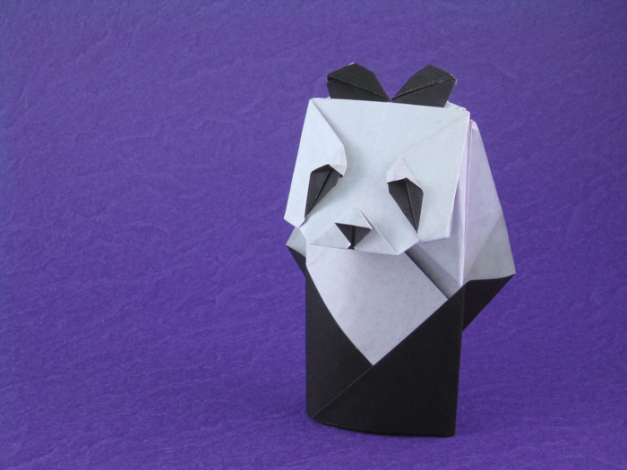
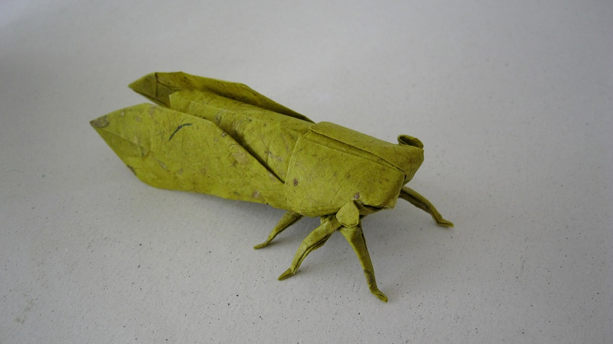
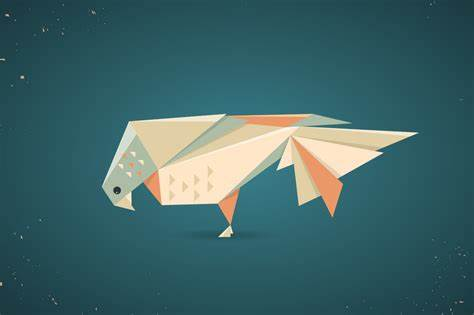
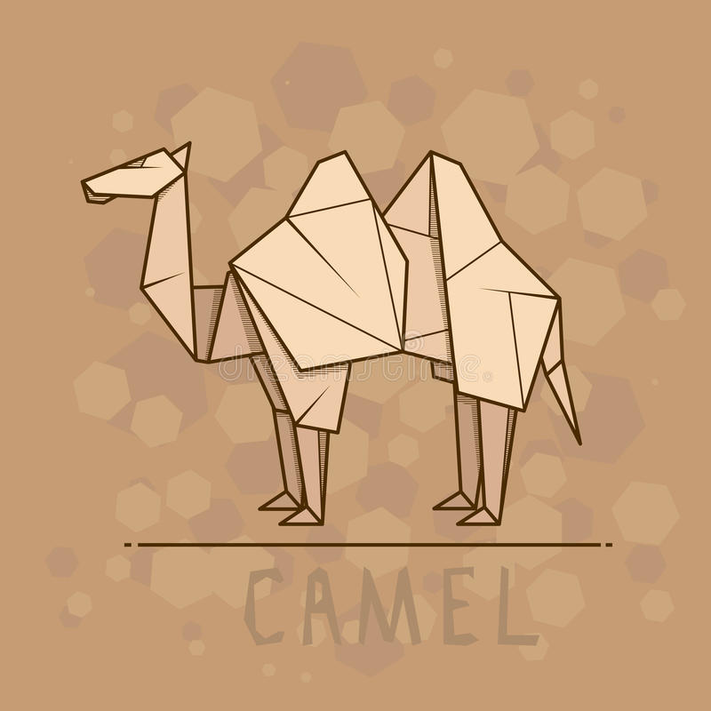

Origami Designs
1. Origami Panda Click here to see the step-by-step tutorial here
Some interesting facts about pandas:
- Giant pandas are good at climbing trees and can also swim.
- Pandas go from pink to white and black🐼🐼
- Prehistoric pandas lived up to 2 million years ago.
2. Origami Chameleon
Click here to see the step-by-step tutorial here
Some interesting facts about chameleons:
- "Chameleon" Means "Ground Lion"
- Almost Half the Population Lives in Madagascar
- They have Long, Sticky Tongues
3. Origami Flying Cicada 
Click here to see the step-by-step tutorial here
Some interesting facts about cicadas:
- Cicadas can survive a huge fall as babies, or nymphs
- They have unique mating calls
- They have violent underground battles with each other
4. Origami Pigeon 
Click here to see the step-by-step tutorial here
Some interesting facts about pigeons:
- Pigeons are incredibly complex and intelligent animals
- Pigeons mate for life, and tend to raise two chicks at the same time
- Both female and male pigeons share responsibility of caring for and raising young
5. Origami Teddy-Bear

Click here to see the step-by-step tutorial here
Some interesting facts about teddy bears:
- The teddy was named after President Theodore Roosevelt, after he refused to shoot a bear during a 1902 hunting trip
- Winnie the Pooh was based on a real bear .
- A Bear toy existed, though not in stuffed form, and were called Bruins.
6. Origami Camel 
Click here to see the step-by-step tutorial here
Some interesting facts about camels:
- Camels have three sets of eyelids and two rows of eyelashes to keep sand out of their eyes
- Camels are very strong and can carry up to 900 pounds for 25 miles a day
- Don’t make a camel angry – they can spit as a way to distract whatever they think is a threat
About-Us
Follow-Me